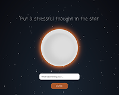

Source #1

This page showcases the kind of interaction I intend my users to have, that of opening a focused yet open-ended question that, via animation and interaction, becomes one in many responses. The site has users sit with their answer and watch it get smaller and smaller, and it's very meditative. I'm hoping that the interactivity with the petals on the screen of my project or some other interaction I come up with also results in a similar feeling.
Source #1

The actual interaction of this site with being able to grab, drop, and throw the cats is similar to how I'd like the petal interaction to be. It's interesting to see how the gravity of each cat is different, some are very bouncy and others are not, which is not something I considered for the petals—perhaps the length of a response affects its size, making it heavier, etc. This is also an example of a site with minimal instructions, encouraging users to jump right into interaction, which is something to keep in mind when maintaining that balance in my project.